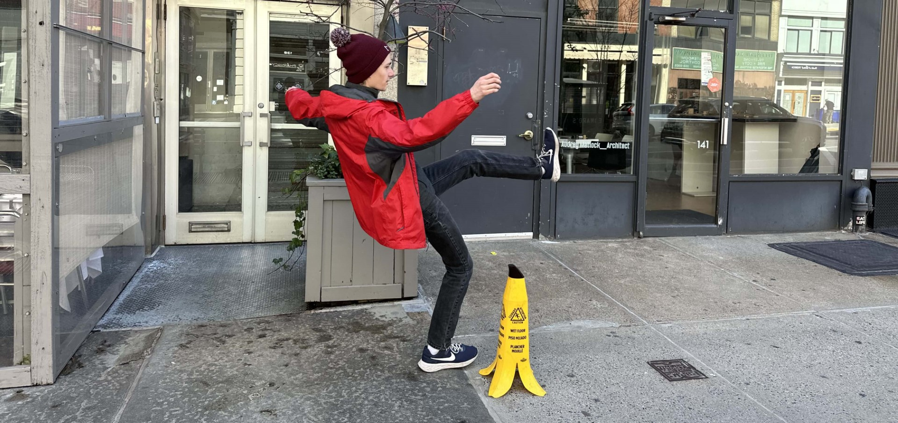

Hi, I'm Travis.
I like stories, asking the question "Why?", and making people happier.

I am a Ph.D. student in the mathematics department at MIT, advised by Henry Cohn and Yufei Zhao, and I teach each summer at Canada/USA Mathcamp. I think bagels are better than donuts.
You can find out lots more about me on this website. If you'd like to reach out, please do: my email is travis.dillon [at] mit [dot] edu.